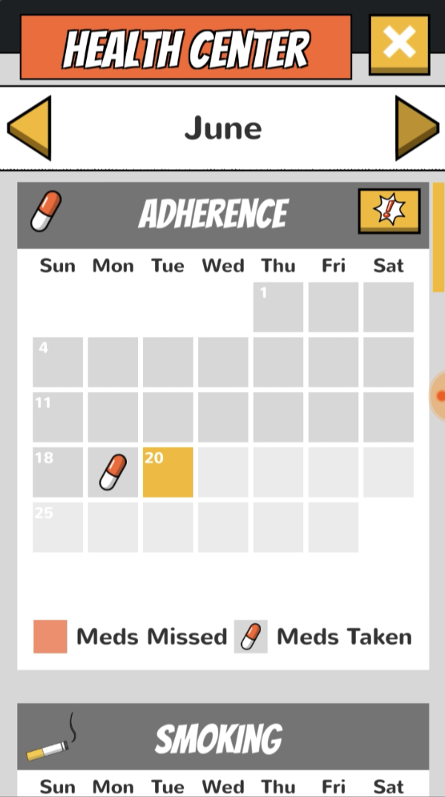
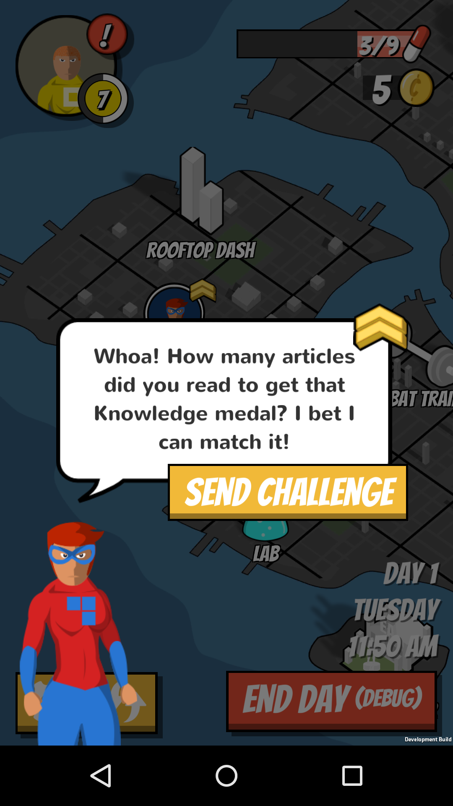
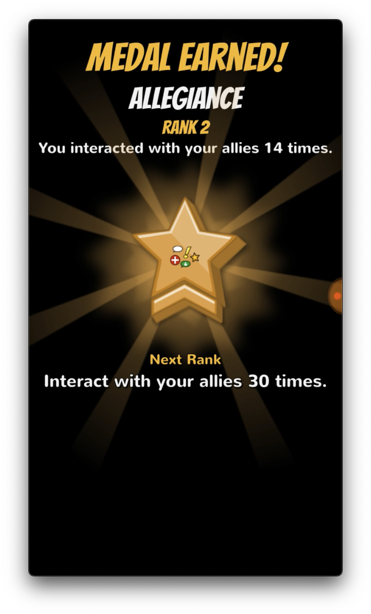
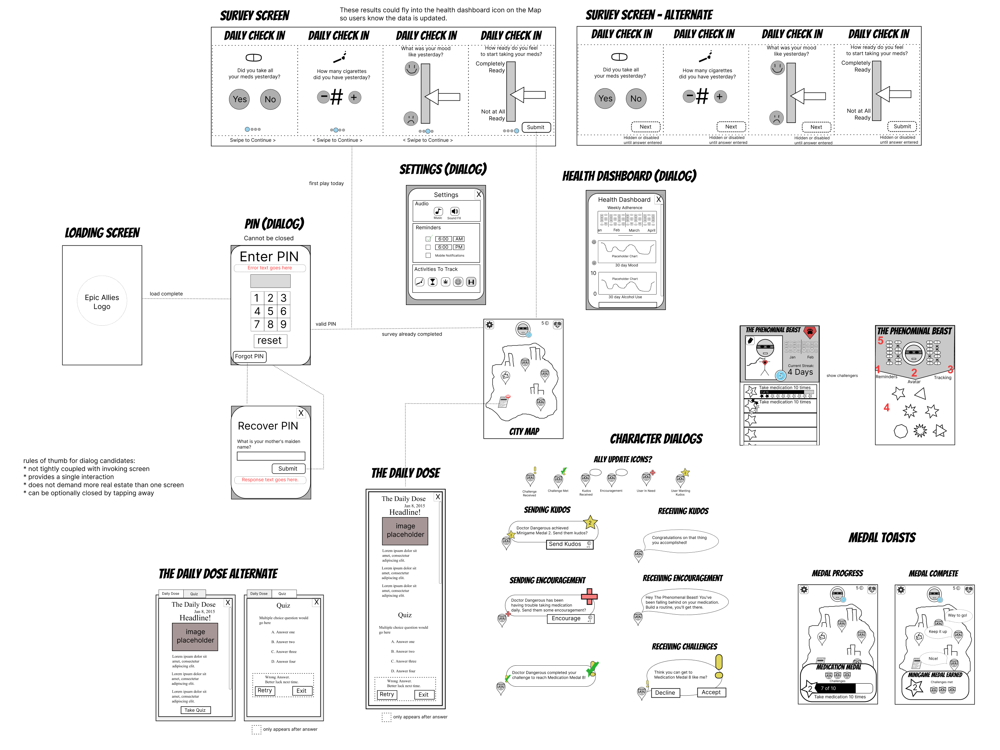

Mobile game designed to improve the medication adherence of young men with HIV. Partnership with Caktus Consulting Group, a leading Django web development firm, and researchers at UNC Chapel Hill and Duke.
The Game
Epic Allies calls on players to take the role of a super-hero trying to save a city from a toxic disaster with the help of their other super-hero allies. Throughout that journey, Epic Allies employs an innovative approach to help improve medication uptake that is based on the Information-Motivation-Behavioral Skills model of health behavior change. To support this model, the app would need to include Behavior Tracking, Social Encouragement, Knowledge Building, and Player Investment (gamification).




These features were translated into the game world of Epic Allies as key locations and activities that existed throughout the player's city. We included a Health Center for behavior tracking and feedback, a Daily Dose newsstand for critical and useful knowledge building, cooperative games and social interactions to facilitate social support, and minigames to encourage investment and engagement.
Our Process
All of our user interactions were first wireframed for review by stakeholders and team members. Once approved, we built functional prototypes in Unity to avoid usability issues.

After functional mockups are approved we begin development in earnest. The teams at Red Blue Games and Caktus followed Agile practices to coordinate the development of Epic Allies. At the end of each sprint, the development team would review the work with the research teams at UNC and Duke and confirm the direction of the next sprint.
Results
Red Blue's role on the project is complete but research is ongoing by UNC, Duke, and Caktus Consulting. Researchers will be going over the data collected by the app alongside information that clinicians gather from the participants. We are eager to see what kind of impact games can have on personal health and positive behavior.
More information: JMIR Serious Games — Epic Allies: Development of a Gaming App to Improve Antiretroviral Therapy Adherence Among Young HIV-Positive Men Who Have Sex With Men · Duke Global Health Institute